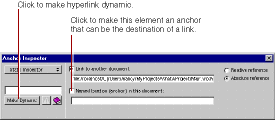

PATH
Documentation > WebObjects 4.5 >
Tools and Techniques
Static Hyperlinks
There are two types of hyperlinks that you can use in a WebObjects application:
-
A static hyperlink (which uses the HTML <A> tag), whose destination is constant.
-
A dynamic hyperlink (WOHyperlink), whose destination can be specified at run time. See
Dynamic Hyperlinks
for more information about these.
To create a static hyperlink:
-
Click
on the toolbar.
-
Type the text that the hyperlink should contain. As you type, the text is underlined.
Alternatively, you can select existing text and then click
to convert the text to a hyperlink.
-
Use the Inspector to set the destination of the link. You can also change the hyperlink to an anchor.

Note
: While the destination of a static link cannot change, it's possible to vary its text at run time by using a dynamic string (see
Dynamic Strings
) inside the hyperlink.
© 1999 Apple Computer, Inc. – (Last Updated July 27 99)